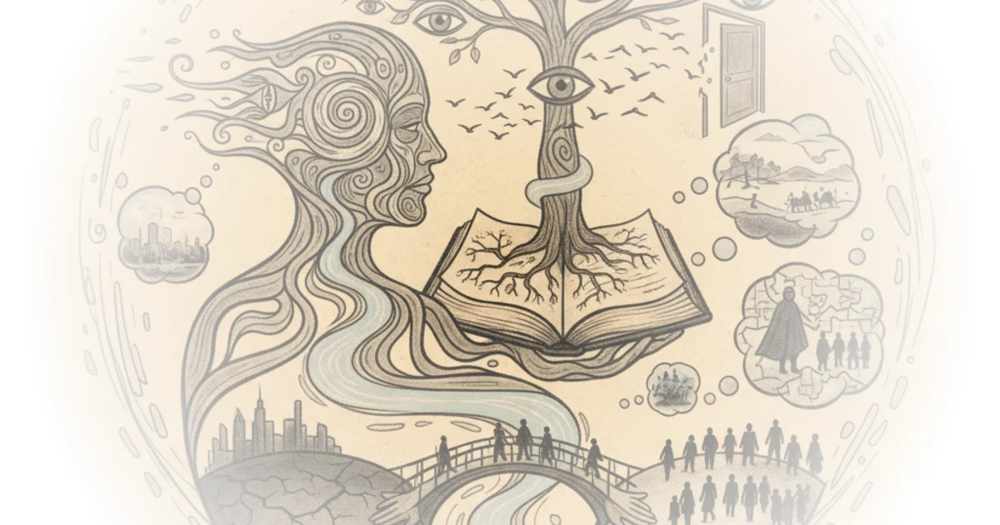

The Chameleon's Binocular Vision
Mohsin Hamid has built a literary career on a single, generative wound: the experience of being unmoored between languages, countries, and identities before he was old enough to understand any of them. In this wide-ranging conversation with Eleanor Wachtel for the Louisiana Channel, he traces a line from a terrified three-year-old standing at the wrong front door in Stanford graduate housing to the magical-realist conceits that power his most acclaimed novels. The interview is less a promotional exercise than a slow excavation of how displacement becomes craft.
The Silence That Made a Writer
The foundational story is remarkable. A three-year-old Hamid, freshly arrived in California from Lahore without a word of English, wanders to a neighbor's door and cannot understand why his mother is not behind it. He goes silent for a month. When he finally speaks again, it is in fluent English with an American accent. His Urdu has vanished. Six years later, the family returns to Pakistan, and the process reverses: he must relearn the language that was once his first.
I'm a person that English is my best language, a language I write in, but it's my second language. And Urdu, which is my third language, was once my first language. And that gives me, I think, a slightly strange relationship to language, trying to figure out how might I communicate something.
Hamid presents this as origin story, and it is a compelling one. But it is worth noting how carefully he hedges the memory itself, acknowledging that at fifty-three he cannot disentangle what he truly remembers from what he has been told and what he has constructed through decades of retelling. This honesty about the unreliability of autobiographical narrative is itself a writerly instinct, and it runs through all of his fiction.

The Chameleon and Its Costs
The displacement produced what Hamid calls a "chameleon" instinct: an ability to read rooms, adopt accents, and intuit the unspoken rules of any social environment almost instantly. He frames this as both self-preservation and the seedbed of empathy.
That feeling of a fear of being outcast, rejected, threatened has as its flip side for me a sense that it's possible to imagine being other people, to connect with other people, even people who seem on their surface very different from me.
This is an elegant formulation, but it papers over something darker. The hypervigilance Hamid describes, the constant scanning for "signs of hostility" and "signs of rejection," is also a trauma response. The chameleon adapts not out of curiosity but out of fear. Hamid acknowledges this when he uses words like "terrified" and "hypervigilant," but the interview moves quickly past these admissions toward the more comfortable territory of literary craft. A fuller accounting might sit longer with the question of what it costs a person to become so fluent in other people's expectations that the boundary between performance and selfhood blurs.
Cracks in Reality as Narrative Method
The most substantive portion of the interview concerns Hamid's distinctive technique of introducing a single speculative element into otherwise realistic fiction. In "Exit West," it is the black doors that teleport people across continents. In "The Last White Man," it is a transformation in which white people wake up with dark skin. Hamid is persuasive in arguing that these devices are not fantasy but compressed metaphor:
All of us do carry around with us these little black rectangles. And when we stare into them, our consciousness is transported from New York to Pakistan, from Denmark to Westeros, to Mars, to the ancient Chinese or Roman empires.
The smartphone-as-portal observation is not new, but Hamid pushes it further than most, connecting it to a broader argument about human beings as inherently migratory creatures whose movement has only recently been constrained by the invention of borders and passports. He then pivots from geographic migration to temporal migration, the inescapable fact that everyone moves through time and loses everything along the way. It is in this pivot that the interview reaches its most genuinely philosophical moment, linking the political question of immigration to the existential question of mortality.
I think that there is a denial of self-compassion that lies at the heart of the inability to extend compassion towards others.
Cervantes, Race, and the Long View
Hamid's extended detour through the history of race, from Herodotus through the Spanish Reconquista to Cervantes, is the most intellectually ambitious section of the interview and also the most contestable. His argument, that the modern concept of race was invented roughly six to eight hundred years ago during the expulsion of Muslims and Jews from Spain, and that it will likely not exist six hundred years from now, draws on real scholarship. The connection between the Spanish concept of "limpieza de sangre" (blood purity) and later racial categorization is well established in the historical literature.
His reading of Don Quixote as a coded commentary on the erasure of Islamic and Jewish culture in Spain is provocative. The detail about "Cide Hamete Benengeli," the fictional Moorish author Cervantes credits as the source of the story, is genuine, though scholars debate how subversive Cervantes intended it to be. Some read it as straightforward parody rather than secret solidarity.
The counterpoint to Hamid's optimism about race dissolving is that social constructs do not simply evaporate because they are revealed as constructs. Gender, class, nationality, and religion are all, in various senses, invented categories, yet they show no signs of disappearing. Hamid seems aware of this tension when he says that "once you believe in something it has enormous power and race clearly has enormous and terrible power," but his assertion that "it is possible to imagine our way out of it" through fiction remains more hopeful than demonstrated.
After September 11th: Losing Partial Whiteness
The most personally revealing section concerns Hamid's experience in New York after September 11, 2001. He describes being pulled off a boarded aircraft, having people change seats on the subway, encountering hostility on the street. What he lost, he argues, was not safety exactly, but "a kind of partial whiteness," the ability to move through elite institutions and public spaces as simply a person rather than a marked body.
At its core, in a sense, whiteness is for me that the notion that you're human, that you're just a person.
This is a striking and uncomfortable formulation. Hamid is not saying whiteness is biological; he is saying it is a social permission to be treated as an unmarked default. His honesty about having benefited from that permission, about having been "complicit in a system" because he was a beneficiary of it, gives the passage a confessional quality unusual in author interviews. The move from "I want things to go back" to "maybe I should want instead to dismantle the system" is presented as a gradual realization rather than a dramatic conversion, which makes it more credible.
The limitation is that Hamid's experience of losing partial whiteness, while genuine, is also the experience of someone who attended elite universities, held well-paying jobs, and lived in New York City. The "partial whiteness" he lost was always partial in a different way than the daily experience of people who never had access to those institutions in the first place. Hamid does not claim equivalence, but the interview does not press on this distinction either.
Bottom Line
Mohsin Hamid emerges from this interview as a writer whose deepest convictions are rooted in early trauma and whose fictional techniques, the speculative "cracks" in otherwise realistic narratives, are sophisticated attempts to make readers feel the disorientation he has carried since childhood. His intellectual range is genuine, moving fluidly from personal memory to literary theory to the history of race. The strongest moments come when he refuses to separate the political from the personal, arguing that the inability to feel compassion for migrants is ultimately an inability to feel compassion for oneself as a creature moving through time toward loss. Where the interview is weakest is where it is most comfortable: Hamid's formulations about empathy, imagination, and the power of fiction can shade into the kind of literary humanism that flatters both speaker and audience without quite reckoning with how little fiction has historically done to prevent the horrors it describes.